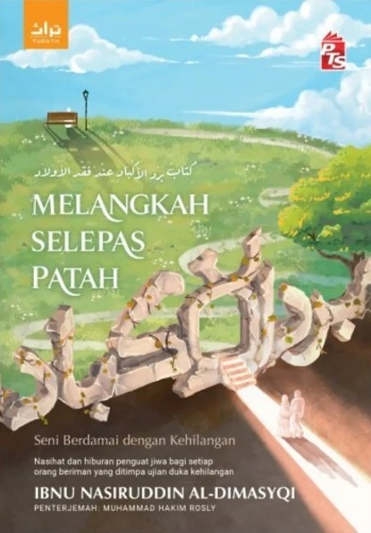

Untuk ibu dan ayah yang anaknya pergi dahulu
Tangan masih ingat beratnya. Hati belum tahu cara melepaskannya.
Kitab penawar hati yang ditulis seorang ulama hadis Damsyik hampir 600 tahun lalu, khusus untuk ibu bapa yang kehilangan anak. Kini dalam bahasa Melayu.
كتاب برد الأكباد عند فقد الأولاد
- PTS Turath 2026
- 232 muka surat
- Terjemahan Muhammad Hakim Rosly
Kalau anda pernah rasa begini
- Orang bertanya, “Anak berapa orang?” dan anda diam sekejap, tak tahu nak kira yang sudah tiada atau tidak.
- Baju kecil itu masih dalam almari. Anda belum sanggup lipat, belum sanggup beri.
- Anda ketawa buat pertama kali selepas berminggu-minggu, kemudian rasa bersalah kerana ketawa.
- Orang kata “sabar ya”, dan anda mahu tahu sabar itu rupanya macam mana bila dada rasa terbelah.
Anda tidak keseorangan. Ibu bapa di zaman Nabi ﷺ juga melalui perkara yang sama, dan para ulama menulis kitab untuk mereka.
Buku ini ditulis untuk saat-saat itu.
Ibnu Nasiruddin Al-Dimasyqi mengumpulkan hadis dan kisah tentang anak-anak yang pergi mendahului ibu bapa mereka, dan apa yang Allah janjikan kepada ibu bapa yang bersabar. Ia membantu anda memahami di mana anak anda sekarang, dan bagaimana untuk terus melangkah sambil membawa kasih itu bersama.
Lima sebab ibu bapa memilih buku ini
-
Ia bercakap tentang anak anda, secara langsung
Tajuk asal kitab ini bermaksud “Penyejuk Hati Ketika Kehilangan Anak”. Setiap bab ditulis dengan ibu bapa dalam fikiran.
Bukti: tajuk Arab asal tertera pada kulit hadapan: برد الأكباد عند فقد الأولاد
-
Setiap penghiburan ada sandarannya
Kata-kata semangat cepat dilupakan. Hadis tentang anak yang menanti ibu bapanya lebih lama melekat di hati, terutama pada malam yang paling sunyi.
Bukti: penulisnya, Ibnu Nasiruddin Al-Dimasyqi, ialah ulama hadis Damsyik abad ke-9 Hijrah.
-
Ia memberi ruang untuk bersedih
Menangis itu fitrah. Rasulullah ﷺ sendiri menangis ketika puteranya Ibrahim wafat. Buku ini mengajak anda berdamai dengan takdir tanpa memaksa anda berhenti merindui.
Bukti: “Hakikatnya, tidak semua beruntung memahami sebab dan akibat atas setiap takdir yang menimpa mereka.” Petikan kulit belakang.
-
Nipis dan ringan, boleh dibaca sedikit demi sedikit
Bila sedang berduka, membaca lama memang susah. Saiz kecil, muat dalam beg tangan, boleh dibuka satu bab sebelum tidur atau ketika menunggu di klinik.
Bukti: 232 m/s, 19.5 × 13.5 cm, 0.23 kg. Kulit lembut.
-
Hadiah takziah bila kata-kata tidak cukup
Sukar mencari kata-kata untuk sahabat yang baru kehilangan anak. Buku ini boleh sampai ke tangan mereka bila anda tidak dapat hadir, dan dibaca semula bila mereka bersedia.
Bukti: boleh dihantar terus ke alamat penerima semasa checkout.
Baca sendiri dahulu
Petikan dari buku
Ketika kita mula memberontak mempertanyakan arah kehidupan, yakinlah bahawa takdir tidak pernah tersilap langkah. Bahkan, sehelai daun yang gugur tidak pernah terlalu awal mahupun terlewat sesaat. Melangkah Selepas Patah, kulit belakang
Tawaran
Satu naskhah untuk anda. Satu lagi, jika ada sahabat yang perlu.
Melangkah Selepas Patah: Seni Berdamai dengan Kehilangan
ISBN 978-629-493-081-0 · Kulit lembut
- Harga asal
- RM30.00
- Diskaun
- −RM3.00 (10%)
- Harga anda hari ini
- RM27.00
- Kumpul 27 mata ganjaran dengan pembelian ini
- Beg tote percuma untuk belian RM120 ke atas di Shop@PTS
- Pembayaran selamat, produk asli terbitan PTS
- Tawaran tamat: [isi tarikh sebenar]
Pautan checkout Shop@PTS belum dipasang. Masukkan URL produk dalam pemboleh ubah CHECKOUT_URL.
Soalan pembeli
Sebelum anda membuat keputusan
Ini kitab lama. Bahasanya berat tak?
Ia diterjemah ke bahasa Melayu oleh Muhammad Hakim Rosly. Petikan dalam bahagian “Baca sendiri dahulu” di atas diambil terus dari buku, jadi anda boleh rasa gaya bahasanya sebelum membeli.
Saya kehilangan ibu, ayah atau pasangan. Masih sesuai?
Fokus utama kitab ini ialah kehilangan anak. Pelajaran tentang sabar, redha dan takdir di dalamnya tetap terpakai untuk sebarang kehilangan, tetapi contoh-contohnya kebanyakan tentang ibu bapa dan anak.
Saya belum bersedia membaca tentang kematian. Patutkah saya tunggu?
Tiada masa yang betul. Ada pembaca yang menyimpan buku seperti ini di sisi katil dan membuka satu dua halaman bila hati sudah kuat sedikit. Saiznya kecil supaya mudah begitu.
Boleh saya hantar terus kepada sahabat sebagai hadiah?
Boleh. Masukkan alamat sahabat anda sebagai alamat penghantaran semasa checkout di Shop@PTS.
Ada versi ebook?
Kulit belakang buku menyatakan versi ebook boleh didapati di pts.com.my/ebook.
Berapa lama penghantaran?
[Isi tempoh penghantaran sebenar Shop@PTS untuk Semenanjung dan Sabah/Sarawak, serta kos pos.]
Melangkah selepas patah
Anak anda sudah mendahului. Kasih anda masih boleh sampai kepadanya.
Biar kitab ini menemani malam-malam yang panjang, dan mengingatkan anda apa yang sedang menanti di hujung kesabaran.